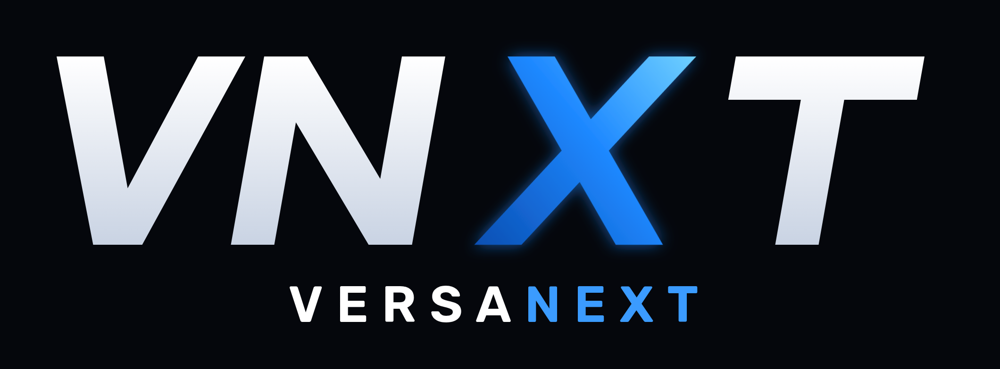

Built Around You
The software is shaped to your business. You are not asked to squeeze the company into a rigid product that was never yours.

You see it on a day that looks like yours. Then we shape the software around your business, and we keep looking after it once it's part of the work.
You see the fit before a build begins. Then the software is shaped to you, refined with you, and cared for once it is part of the day.
A live demo built for your day. You watch a solution that looks like your work, so you can feel the fit before you decide anything.
The right fit for your goals. You choose a scope that matches where the business is headed, instead of being handed a product designed for someone else.
About a month, built around you. Your solution takes shape around the way the business already runs.
A month of edits and changes. You use it. We adjust it. It gets closer to the way your team actually works.
Monthly support and hosting, with care that stays. Your Account Manager is with you from the first meeting on, and support is here 24/7. It does not clock out when the day runs long. We look after the hosting so the solution keeps running. As the business changes, the solution can grow with you. You are not handed something new and left on your own.
A virtual employee for your business. Custom software that works the way you do, and people who stay with you.
The software is shaped to your business. You are not asked to squeeze the company into a rigid product that was never yours.
Your virtual employee handles the everyday: it schedules jobs, keeps records current, reads receipts, takes notes by voice, and reports back. Every day, while your team stays on the work that needs them.
One dedicated Account Manager from the first meeting on. Support is here 24/7 and never clocks out, so a question at the end of a long day still reaches a person.
VersaNext is that virtual employee: custom software built around how you run, from a team focused on local Tallahassee businesses.